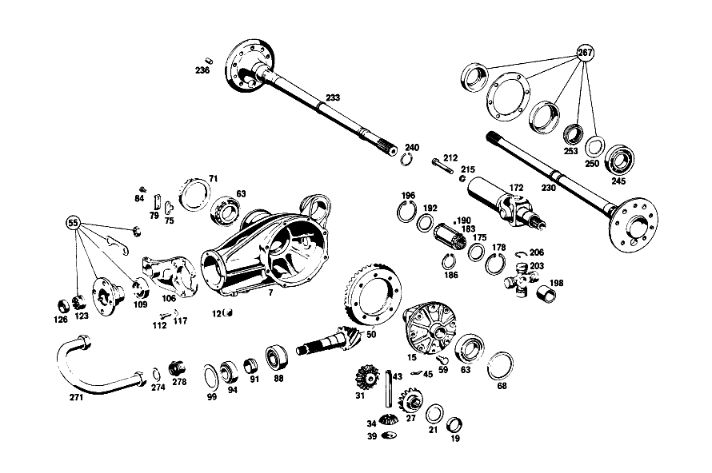

| № | Артикул | Название | Кол. | Примечание | Ограничение |
|---|---|---|---|---|---|
| 7 | A 108 350 00 20 | КАРТЕР МОСТА | 1 | ||
| 12 | A 186 997 00 32 | - ЗАГЛУШКА РЕЗЬБОВАЯ | 2 | M24X1,5 | |
| 15 | A 108 350 02 23 | ДИФФЕРЕНЦИАЛ | 1 | ||
| 19 | A 108 353 00 48 | - Втулка подшипника | 1 | ||
| 21 | A 184 353 00 62 | - Упорная шайба | 2 | ПО НЕОБХОДИМОСТИ 1.3 MM [402] БОЛЬШЕ НЕ ПОСТАВЛЯЕТСЯ | |
| 27 | A 108 353 01 15 | - ШЕСТЕРНЯ ПОЛУОСИ | - | ||
| 27 | A 108 350 01 40 | - Шестерня полуоси | 1 | СЛЕВА | |
| 31 | A 108 350 01 40 | - Шестерня полуоси | 1 | СПРАВА | |
| 34 | A 116 353 02 14 | - ВЕДУЩ.КОН.ШЕСТЕРНЯ | - | ||
| 34 | A 140 353 05 14 | - Сателлит дифференциала | 2 | ||
| 39 | A 112 353 01 24 | - Сферическая шайба | 2 | ||
| 43 | A 108 353 00 21 | - Палец | 1 | ||
| 45 | A 112 993 00 30 | - ПРУЖИНА | 1 | ||
| 50 | A 111 350 08 39 | Комплект колес | 1 | 1:3.92 [004] 016 UP TO CHASSIS 044225; 018 UP TO CHASSIS 045703; 019 UP TO CHASSIS 045798 | |
| 55 | A 108 586 01 35 | ремкомплект | 1 | ПРИВОДН. КОНИЧ. ШЕСТЕРНЯ | |
| 59 | A 128 990 00 01 | болт | 10 | ||
| 63 | A 000 980 19 02 | Кон. роликоподшипник | 2 | ||
| 68 | A 112 353 08 52 | Компенсационная шайба | 1 | ПО НЕОБХОДИМОСТИ 1.8mm | |
| 71 | A 112 353 01 25 | Резьбовое кольцо | 1 | ||
| 75 | A 180 353 01 73 | ПРЕДОХРАНИТЕЛЬ | 1 | ПО НЕОБХОДИМОСТИ | |
| 79 | A 180 994 00 30 | Стопорная шайба | 1 | ||
| 84 | N 000933 006103 | Винт | - | ||
| 84 | N 304017 006018 | Винт с 6-гранной головкой | 2 | M6X12 | |
| 88 | A 000 980 10 02 | Конический подшипник | 1 | ||
| 91 | A 108 353 00 42 | Распорная втулка | 1 | ||
| 94 | A 000 980 18 02 | Конический подшипник | 1 | ||
| 99 | A 112 353 14 52 | Компенсационная шайба | 1 | ПО НЕОБХОДИМОСТИ 1.5mm | |
| 106 | A 110 353 03 08 | КРЫШКА | 1 | ||
| 109 | A 005 997 41 46 | УПЛОТНИТ. КОЛЬЦО | 1 | ||
| 112 | N 304017 008023 | Винт с 6-гранной головкой | 6 | M8X20\-10.9 | |
| 117 | N 912004 008102 | Пружинное кольцо | 6 | ||
| 123 | A 111 350 01 66 | Шлицевая гайка | 1 | ||
| 126 | A 111 994 02 44 | - предохранитель | 1 | ||
| 152 | A 108 350 02 19 | ТРУБА НЕСУЩАЯ | 1 | СЛЕВА | |
| 155 | A 108 350 03 19 | ТРУБА НЕСУЩАЯ | 1 | СПРАВА | |
| 157 | A 180 351 01 50 | - втулка | 2 | ||
| 161 | A 115 350 02 90 | Воздушный клапан | 1 | ||
| 167 | A 108 351 00 68 | КОЛПАЧОК | 1 | ||
| 172 | A 112 350 02 13 | ШАРНИР ШАРОВОЙ | 1 | ||
| 175 | A 180 357 01 52 | - Диск | 1 | ||
| 178 | A 000 994 29 41 | - Стопорное кольцо | 1 | ||
| 183 | A 108 350 00 48 | - Скользящая муфта | 1 | ||
| 190 | A 180 981 00 86 | - Ролик | 114 | ||
| 192 | A 188 357 00 52 | - Диск | 1 | ||
| 196 | A 094 990 71 05 | - Стопорное кольцо | 1 | ||
| 198 | A 112 357 03 50 | - ВТУЛКА | 1 | ||
| 203 | A 112 350 01 28 | - Карданный шарнир | 1 | с NEEDLE BEARING BUSHINGS AND NEEDLES | |
| 206 | A 186 994 12 35 | - Пруж. стопорное кольцо | 4 | ПО НЕОБХОДИМОСТИ 2.15 MM | |
| 212 | N 000912 010053 | БОЛТ | 1 | ||
| 215 | N 912004 010102 | Пружинное кольцо | 1 | ||
| 219 | A 110 357 04 91 | Манжета | 1 | ||
| 221 | A 110 357 03 91 | Манжета | 1 | РЕМОНТ. ИСПОЛНЕНИЕ | |
| 226 | A 002 988 10 78 | Скоба | 9 | РЕМОНТ. ИСПОЛНЕНИЕ | |
| 230 | A 108 350 03 10 | Полуось заднего моста | 1 | СЛЕВА | |
| 233 | A 108 350 07 10 | Полуось заднего моста | 1 | СПРАВА | |
| 236 | A 115 991 05 60 | - Цилиндрический шрифт | 1 | ||
| 240 | A 108 994 00 35 | - СТОПОРН. КОЛЬЦО | 1 | [009] 016 FROM CHASSIS 054213; 018,019 FROM CHASSIS 059186 | |
| 245 | A 001 981 15 25 | Шарикоподшипник | - | ||
| 245 | A 002 981 23 01 | ПОДШ. С ЦИЛ. РОЛИКАМИ | 2 | ||
| 250 | A 183 353 03 73 | предохранитель | 2 | ||
| 253 | A 153 357 00 26 | Шлицевая гайка | 2 | ||
| 259 | N 000933 010164 | Винт | 8 | ||
| 265 | A 126 423 00 12 | Тормозной диск | 2 | ||
| 267 | A 111 350 00 68 | Ремк-т полуоси зад. моста | 2 | УПЛОТНЕНИЕ ПОЛУОСИ ЗАДНЕГО МОСТА | |
| 283 | A 110 351 00 74 | Палец | 1 | ||
| 287 | A 180 351 01 53 | Проставочная втулка | 2 | ПО НЕОБХОДИМОСТИ 26.0 MM | |
| 287 | A 180 351 18 53 | Проставочная втулка | 2 | ПО НЕОБХОДИМОСТИ 25.8 MM | |
| 287 | A 180 351 17 53 | Проставочная втулка | 2 | ПО НЕОБХОДИМОСТИ 25.6 MM | |
| 287 | A 180 351 16 53 | Проставочная втулка | 2 | ПО НЕОБХОДИМОСТИ 25.4 MM | |
| 287 | A 180 351 15 53 | РАСПОРН. ТРУБКА | - | ||
| 287 | A 180 351 16 53 | Проставочная втулка | 2 | ПО НЕОБХОДИМОСТИ 25.2 MM | |
| 287 | A 180 351 14 53 | Проставочная втулка | 2 | ПО НЕОБХОДИМОСТИ 25.0 MM | |
| 293 | A 180 351 14 52 | Компенсационная шайба | 2 | ПО НЕОБХОДИМОСТИ 2.0 MM | |
| 295 | A 180 351 13 52 | Центрирующее кольцо | - | ||
| 295 | A 180 351 14 52 | Компенсационная шайба | 2 | ПО НЕОБХОДИМОСТИ 1.9 MM | |
| 299 | A 180 351 03 51 | Проставочное кольцо | 2 | ||
| 304 | A 180 351 09 86 | Резиновое кольцо | 4 | ||
| 306 | A 180 351 00 74 | Клин | 1 | ||
| 307 | N 912004 008102 | Пружинное кольцо | 1 | ||
| 309 | N 000934 008013 | Гайка | 1 | ||
| 311 | A 180 994 03 41 | Стопорное кольцо | 1 | ||
| 313 | N 000443 020000 | Запорная крышка | 1 | ||
| 316 | A 180 997 04 30 | Резьбовая пробка | 1 | ||
| 317 | A 180 994 01 12 | Стопорная шайба | 1 | ||
| 318 | N 071412 006100 | Пресс-масленка | 1 | [402] БОЛЬШЕ НЕ ПОСТАВЛЯЕТСЯ | |
| 320 | N 071412 006200 | Пресс-масленка | 1 | ||
| 322 | A 110 350 12 75 | Резиновая опора | 1 | ||
| 324 | A 109 350 00 32 | Кронштейн | 1 | ||
| 327 | N 001473 003001 | - Просечной штифт | 1 | ||
| 329 | N 070614 010018 | Винт | 3 | ||
| 331 | N 912004 010102 | Пружинное кольцо | 3 | ||
| 333 | A 110 350 10 29 | НИЖН. ПРОДОЛЬН. ШТАНГА | 1 | СЛЕВА | |
| 335 | A 110 352 18 65 | Резиновая опора | - | [008] NO LONGER AVAILABLE INDIVIDUALLY, BUT ONLY IN REPAIR KIT | |
| 337 | A 111 352 05 09 | Опорный палец | 2 | ||
| 339 | A 111 352 12 76 | Пружинная шайба | 4 | ||
| 342 | N 009045 032000 | Пруж. стопорное кольцо | 4 | ||
| 345 | A 110 352 01 51 | Проставочное кольцо | 4 | ||
| 348 | A 111 352 01 71 | болт | 4 | ||
| 350 | A 111 352 01 73 | Стопорная шайба | 4 | ||
| 353 | A 110 350 06 75 | Резиновая опора | 1 | С ПРИЖИМ. ДИСКОМ | |
| 354 | A 110 351 00 45 | Пружинная шайба | 1 | СВЕРХУ | |
| 356 | N 000961 016004 | Винт | 1 | ||
| 358 | N 912004 016101 | Пружинное кольцо | 1 | ||
| 360 | N 000933 010128 | Винт | 4 | ||
| 361 | N 912004 010102 | Пружинное кольцо | 4 | ||
| 365 | A 110 350 04 93 | Поперечная распорка | 1 | ||
| 367 | N 000934 014008 | Гайка | 1 | ||
| 369 | A 111 351 03 40 | ДЕРЖАТЕЛЬ | 1 | ||
| 371 | A 111 351 04 48 | Резиновая опора | 2 | ||
| 373 | A 111 351 02 40 | Язычок | 1 | ||
| 375 | N 000933 010238 | Винт | - | ||
| 375 | N 304017 010028 | Винт с 6-гранной головкой | 1 | M10X20\-8.8 | |
| 377 | N 000137 010201 | Пружинная шайба | 1 | ||
| 379 | N 000961 012040 | Винт | 1 | ||
| 380 | N 000137 012203 | Пружинная шайба | - | ||
| 380 | A 094 990 42 05 | Пружинная шайба | 1 | ||
| 382 | A 110 351 07 43 | Чашка | 1 | ||
| 384 | A 111 351 04 44 | Резиновое кольцо | 2 | ||
| 386 | A 110 351 06 43 | Чашка | 1 | ||
| 388 | N 000934 012023 | Гайка | - | ||
| 388 | N 308673 012002 | Шестигранная гайка | 1 | ||
| 390 | N 007967 012000 | Гайка | 1 | ||
| 395 | A 110 352 10 65 | Резиновая опора | 2 | ||
| 396 | A 110 352 00 42 | Крепежная пластина | 2 | ||
| 399 | A 108 990 03 40 | Диск | 2 | MOUNTING PLATE TO BODY FLOOR | |
| 403 | N 912004 008102 | Пружинное кольцо | 6 | MOUNTING PLATE TO BODY FLOOR | |
| 407 | N 000934 008013 | Гайка | 6 | MOUNTING PLATE TO BODY FLOOR | |
| 411 | N 912004 014100 | Пружинное кольцо | 2 | ||
| 415 | N 000934 014019 | Гайка | - | ||
| 415 | N 308673 014001 | Шестигранная гайка | 2 | M14X1.5 | |
| A 108 350 30 00 | ЗАДНИЙ МОСТ | - | |||
| A 111 350 00 03 | КАРТЕР МОСТА | - | 1:3.92 [412] БОЛЬШЕ НЕ ПОСТАВЛЯЕТСЯ, ЗАКАЗЫВАТЬ ОТДЕЛЬНЫЕ ДЕТАЛИ [002] 016 FROM CHASSIS 034764-044225; 018 FROM CHASSIS 035763-045703; 019 FROM CHASSIS 035738-045798 | ||
| A 108 350 28 00 | ЗАДНИЙ МОСТ | - | |||
| A 108 350 01 03 | Картер моста | - | 1:3.69 [412] БОЛЬШЕ НЕ ПОСТАВЛЯЕТСЯ, ЗАКАЗЫВАТЬ ОТДЕЛЬНЫЕ ДЕТАЛИ [003] 016 FROM CHASSIS 044226; 018 FROM CHASSIS 045704; 019 FROM CHASSIS 045799 [697] ДЕТАЛЬ ПОСТАВЛЯЕТСЯ ТОЛЬКО/ИЛИ ТАКЖЕ КАК ЗАП.ЧАСТЬ | ||
| A 111 350 00 03 | КАРТЕР МОСТА | 1 | с DIFFERENTIAL GEAR 1:3.92 [412] БОЛЬШЕ НЕ ПОСТАВЛЯЕТСЯ, ЗАКАЗЫВАТЬ ОТДЕЛЬНЫЕ ДЕТАЛИ [004] 016 UP TO CHASSIS 044225; 018 UP TO CHASSIS 045703; 019 UP TO CHASSIS 045798 | ||
| A 108 350 01 03 | Картер моста | 1 | с DIFFERENTIAL GEAR 1:3.69 [412] БОЛЬШЕ НЕ ПОСТАВЛЯЕТСЯ, ЗАКАЗЫВАТЬ ОТДЕЛЬНЫЕ ДЕТАЛИ [003] 016 FROM CHASSIS 044226; 018 FROM CHASSIS 045704; 019 FROM CHASSIS 045799 [697] ДЕТАЛЬ ПОСТАВЛЯЕТСЯ ТОЛЬКО/ИЛИ ТАКЖЕ КАК ЗАП.ЧАСТЬ | ||
| A 108 353 00 01 | - КОРПУС ДИФФЕРЕНЦИАЛА | - | [005] БОЛЬШЕ НЕ ПОСТАВЛЯЕТСЯ | ||
| A 108 353 01 48 | - Кольцо | 1 | |||
| A 184 353 01 62 | - Упорная шайба | 2 | ПО НЕОБХОДИМОСТИ 1.4 MM | ||
| A 184 353 02 62 | - Упорная шайба | 2 | ПО НЕОБХОДИМОСТИ 1.5mm | ||
| A 184 353 03 62 | - Упорная шайба | 2 | ПО НЕОБХОДИМОСТИ 1.6mm | ||
| A 184 353 04 62 | - Упорная шайба | 2 | ПО НЕОБХОДИМОСТИ 1.7 MM | ||
| A 112 350 09 39 | Комплект колес | 1 | 1:3.69 [003] 016 FROM CHASSIS 044226; 018 FROM CHASSIS 045704; 019 FROM CHASSIS 045799 | ||
| A 112 353 09 52 | Компенсационная шайба | 1 | ПО НЕОБХОДИМОСТИ 1.9 MM | ||
| A 112 353 10 52 | Компенсационная шайба | 1 | ПО НЕОБХОДИМОСТИ 2.0 MM | ||
| A 112 353 11 52 | Компенсационная шайба | 1 | ПО НЕОБХОДИМОСТИ 2.1 MM | ||
| A 112 353 12 52 | Торцевое уплотнение | - | |||
| A 112 353 11 52 | Компенсационная шайба | 1 | ПО НЕОБХОДИМОСТИ 2.2 MM | ||
| A 180 353 02 73 | ПРЕДОХРАНИТЕЛЬ | 1 | ПО НЕОБХОДИМОСТИ | ||
| A 180 353 03 73 | ПРЕДОХРАНИТЕЛЬ | 1 | ПО НЕОБХОДИМОСТИ | ||
| A 180 353 05 73 | предохранитель | 1 | ПО НЕОБХОДИМОСТИ | ||
| A 180 353 06 73 | ПРЕДОХРАНИТЕЛЬ | 1 | ПО НЕОБХОДИМОСТИ | ||
| A 000 980 18 02 | Конический подшипник | 1 | |||
| A 000 980 52 02 | КОНИЧ. РОЛИКОПОДШИПНИК | 1 | |||
| A 112 353 16 52 | РАСПОРНАЯ ШАЙБА | 1 | ПО НЕОБХОДИМОСТИ 1.6mm | ||
| A 112 353 18 52 | РАСПОРНАЯ ШАЙБА | 1 | ПО НЕОБХОДИМОСТИ 1.7 MM [402] БОЛЬШЕ НЕ ПОСТАВЛЯЕТСЯ | ||
| A 112 353 20 52 | Компенсационная шайба | 1 | ПО НЕОБХОДИМОСТИ 1.8mm | ||
| A 004 997 56 46 | Уплотнительное кольцо | 1 | |||
| A 110 350 01 45 | Фланец | 1 | |||
| A 110 320 24 43 | - Держатель | 1 | |||
| A 110 320 25 43 | - ДЕРЖАТЕЛЬ | 1 | [402] БОЛЬШЕ НЕ ПОСТАВЛЯЕТСЯ | ||
| A 186 994 04 35 | - СТОПОРН. КОЛЬЦО | 4 | ПО НЕОБХОДИМОСТИ 2.25 MM | ||
| A 186 994 15 35 | - СТОПОРН. КОЛЬЦО | 4 | ПО НЕОБХОДИМОСТИ 2.35 MM | ||
| A 186 994 17 35 | - СТОПОРН. КОЛЬЦО | 4 | ПО НЕОБХОДИМОСТИ 2.45 MM | ||
| A 186 994 19 35 | - СТОПОРН. КОЛЬЦО | 4 | ПО НЕОБХОДИМОСТИ 2.55 MM | ||
| N 900288 088003 | Хомут | 1 | ТРУБА НЕСУЩАЯ | ||
| N 900288 121000 | Хомут | 1 | КАРТЕР ЗАДНЕГО МОСТА | ||
| A 180 351 14 52 | Компенсационная шайба | 2 | ПО НЕОБХОДИМОСТИ 2.0 MM | ||
| A 180 351 15 52 | Дистанционная шайба | 2 | ПО НЕОБХОДИМОСТИ 2.1 MM | ||
| A 180 351 16 52 | Компенсационная шайба | 2 | ПО НЕОБХОДИМОСТИ 2.2 MM | ||
| A 180 351 17 52 | Компенсационная шайба | 2 | ПО НЕОБХОДИМОСТИ 2.3 MM | ||
| A 180 351 18 52 | Компенсационная шайба | 2 | ПО НЕОБХОДИМОСТИ 2.4 MM | ||
| A 180 351 19 52 | Компенсационная шайба | 2 | ПО НЕОБХОДИМОСТИ 2.5mm | ||
| A 180 351 27 52 | Компенсационная шайба | 2 | ПО НЕОБХОДИМОСТИ 2.6 MM | ||
| A 180 351 28 52 | Компенсационная шайба | 2 | ПО НЕОБХОДИМОСТИ 2.7 MM | ||
| A 180 351 29 52 | Центрирующее кольцо | - | |||
| A 180 351 30 52 | Компенсационная шайба | 2 | ПО НЕОБХОДИМОСТИ 2.8 MM | ||
| A 180 351 30 52 | Компенсационная шайба | 2 | ПО НЕОБХОДИМОСТИ 2.9 MM | ||
| A 180 351 20 52 | Компенсационная шайба | 2 | ПО НЕОБХОДИМОСТИ 3.0 MM | ||
| A 180 351 31 52 | Компенсационная шайба | 2 | ПО НЕОБХОДИМОСТИ 3.1 MM | ||
| A 180 351 32 52 | Центрирующее кольцо | - | |||
| A 180 351 31 52 | Компенсационная шайба | 2 | ПО НЕОБХОДИМОСТИ 3.2 MM | ||
| A 110 350 12 75 | Резиновая опора | 1 | |||
| A 110 350 11 29 | НИЖН. ПРОДОЛЬН. ШТАНГА | 1 | СПРАВА | ||
| A 110 350 14 75 | Ремк-т реактивной штанги | 1 | НИЖН. ПРОДОЛЬН. ШТАНГА | ||
| A 111 352 03 71 | БОЛТ | 4 | |||
| N 000933 008147 | Винт | - | |||
| N 304017 008021 | Винт с 6-гранной головкой | 4 | MOUNTING PLATE TO BODY FLOOR; M8X20 | ||
| N 000125 008407 | ШАЙБА | 8 | MOUNTING PLATE TO BODY FLOOR |
Позиций: 189 · подписано на схемах: 130 · колесо — плавный зум в курсор, перетаскивание — пан, двойной клик — зум, клик по артикулу — скопировать.